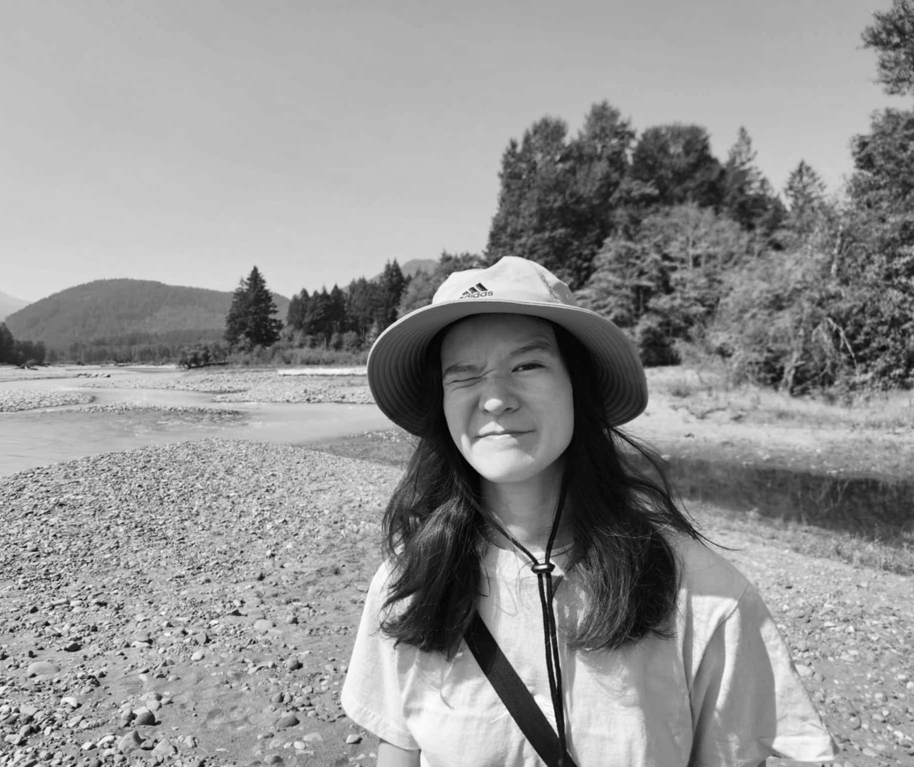

I am a half-Taiwanese software engineer living in Iowa City, IA with a passion for visually compelling science fiction and fantasy stories. While studying engineering, I acquired a writing certificate through the University of Iowa’s Writers’ Workshop, using my knowledge of science and technology to enhance my storytelling.
When I am not coding or writing with a cat on my lap, I spend as much time as I can outdoors by either digging around in my garden with my dog or exploring new trails and parks with my husband across the country.
email: annayrevelez@gmail.com
You can also find me posting and querying at:
Status: Query Ready
About: A 21k science-fiction, dark fantasy adult novella featuring a morally gray, BIPOC, and queer vampire in space.
Comps: MONSTERS AND MAINFRAMES by Barbara Truelove, THE MURDERBOT DIARIES series by Martha Wells, THE LOCKED TOMB series by Tamsyn Muir, BURY OUR BONES IN THE MIDNIGHT SOIL by V.E. Schwab
Status: Drafting
About: A 75k dark, urban fantasy adult novel featuring a former streetfighter turned demon hunter in a post-apocalyptic, cyberpunk setting centered around Chinese history, culture, and mythology.
Comps: THE CURSE BEARER series by Veronica Roth, THE GREENBONE SAGA series by Fonda Lee, THE POET EMPRESS by Shen Tao, THE POPPY WAR series by R.F. Kuang, TRESE T.V. series by Budjette Tan
Status: Drafting
Status: Drafting